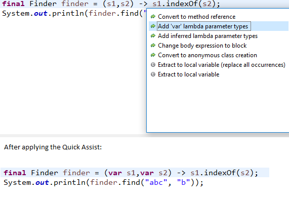
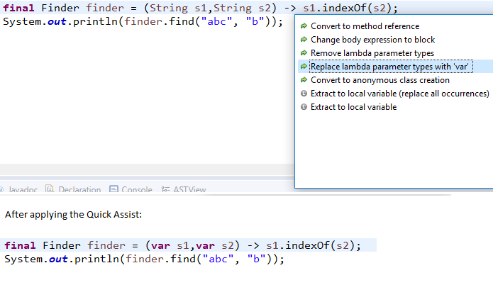
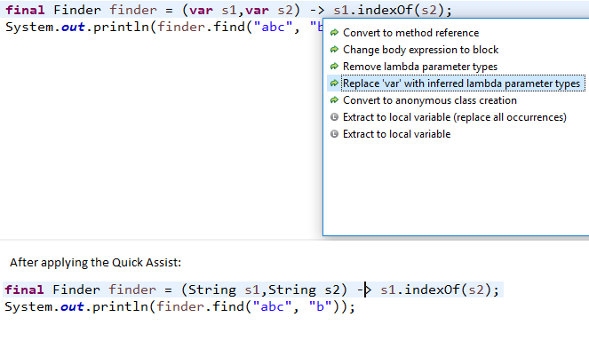
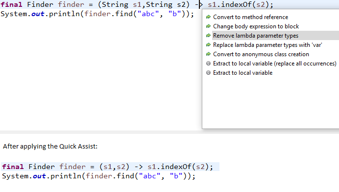
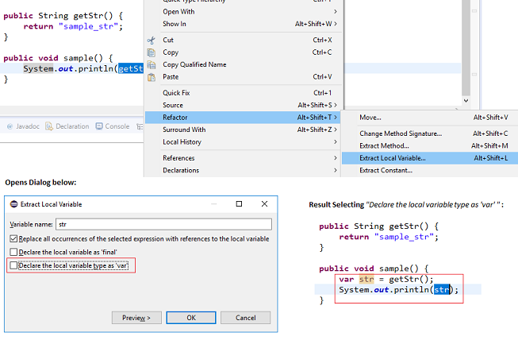
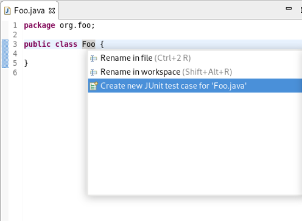

Java™ 11 Support
|
| Eclipse support for Java™ 11 |
Java™ 11 is here, and JDT supports it completely.
- The Eclipse compiler for Java (ECJ) implements the new Java 11 language enhancements.
- For an informal list of examples of Java 11 features, please have a look here.
|
| Addition of Java 11 JRE |
A Java 11 JRE is recognized by Eclipse for launching. It can be added from the Window > Preferences > Java > Installed JREs > Add... page.
It can be added from the Package Explorer as well using the project's context menu.

An option to set compiler compliance to 11 on a Java project is also provided.
|
| Quick fix to change project compliance and JRE to 11 |
A quick fix Change project compliance and JRE to 11 is provided to quickly change the current project to be compatible with Java 11.

|
| Quick assist to add 'var' type to lambda parameters |
A new quick assist has been implemented that allows the user to add 'var' type to lambda parameters.
This quick assist is only available if the project is a Java 11 project or above.

|
| Quick assist to replace lambda parameter types with 'var' |
A new quick assist has been implemented that allows the user to replace lambda parameter types with 'var'.
This quick assist is only available if the project is a Java 11 project or above.

|
| Quick assist to replace 'var' in lambda parameter types with inferred types |
A new quick assist has been implemented that allows the user to replace 'var' in lambda parameter types with inferred types.
This quick assist is only available if the project is a Java 11 project or above.

|
| Quick assist to remove lambda parameter types |
A new quick assist has been implemented that allows the user to remove lambda parameter types.

|
| Option of declaring local variable type as 'var' while extracting local variable |
An additional option of declaring local variable type as 'var' while extracting local variable is provided.
This option is only available if the project is a Java 10 project or above.
If selected, the local variable type will be 'var' as shown in the picture below.

|
JUnit
|
| Quick assist to create JUnit test case |
You can now open the JUnit Test Case wizard quickly by invoking the new Quick Assist (Ctrl+1) on a type declaration:

|
Java Views and Dialogs
|
| Build path problems |
If a project which only has main source folders depends on a project which only has test source folders, a build path error is reported now.
This can be disabled in Preferences > Java > Compiler > Building or the corresponding project specific settings.

A quick fix Configure problem severity that opens this settings page is now offered for configurable build path problems reported in the problems view.

|
JDT Developers
|
| Make JDT builder use null as scheduling rule |
By configuring the org.eclipse.jdt.core/useNullSchedulingRule preference to true, the JDT builder will use null
as the scheduling rule instead of the workspace root. The preference can be changed using the Preferences APIs, or by editing
the plugin_customization.ini file of your application.
This prevents the Java builder from locking the whole workspace. The user can continue to work in parallel and other builders
can also run in parallel, which results in faster builds and faster UI feedback.
As of 4.10, this is considered as an experimental feature and is introduced mainly for testing purposes.
|